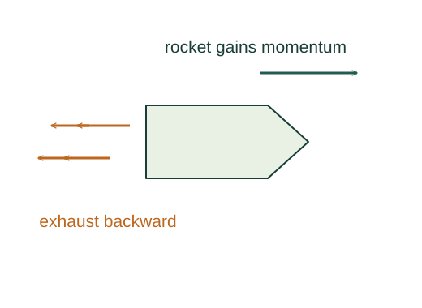

Derive the ideal rocket equation and momentum flux
Include rocket and the small exhaust parcel together, so their total momentum is conserved during the short ejection interval.
What the symbols mean
M: remaining rocket plus fuel mass; dM < 0: mass loss; vrel > 0: backward exhaust speed relative to rocket; R = −dM/dt.
When this applies
One-dimensional ideal exhaust, negligible external impulse, constant relative exhaust speed for the integrated logarithm.

Use a closed system during ejection
Include rocket and the small exhaust parcel together, so their total momentum is conserved during the short ejection interval.
Keep first-order changes
Expand and discard the product dM dv. The original Mv cancels, leaving a gain in rocket momentum opposite the expelled relative momentum.
Divide by time
Replacing the negative mass-loss rate by positive R gives thrust and instantaneous acceleration.
Integrate the changing mass
Mass cannot be treated as constant during a finite burn. Divide by M and integrate between initial and final masses.
Relate to a stream hitting a target
The same momentum-flux reasoning gives force on a target opposite the rate of the stream’s momentum change.
Where each equation comes from
Derived equations link to an argument below. Definitions, physical postulates and constitutive models are identified as the inputs of that argument.
Derivation of the main resultDerived result
Conditions: One-dimensional ideal exhaust, negligible external impulse, constant relative exhaust speed for the integrated logarithm.
- Use a closed system during ejection. Include rocket and the small exhaust parcel together, so their total momentum is conserved during the short ejection interval. Explain the equation used in step 1 ↗
- Keep first-order changes. Expand and discard the product dM dv. The original Mv cancels, leaving a gain in rocket momentum opposite the expelled relative momentum. Explain the equation used in step 2 ↗
- Divide by time. Replacing the negative mass-loss rate by positive R gives thrust and instantaneous acceleration. Explain the equation used in step 3 ↗
- Integrate the changing mass. Mass cannot be treated as constant during a finite burn. Divide by M and integrate between initial and final masses. Explain the equation used in step 4 ↗
- Relate to a stream hitting a target. The same momentum-flux reasoning gives force on a target opposite the rate of the stream’s momentum change. Explain the equation used in step 5 ↗
Equation in step 1Derived result
What is being shown: Use a closed system during ejection
Include rocket and the small exhaust parcel together, so their total momentum is conserved during the short ejection interval.
Starting conditions and inputs: One-dimensional ideal exhaust, negligible external impulse, constant relative exhaust speed for the integrated logarithm.
Equation in step 2Derived result
What is being shown: Keep first-order changes
Expand and discard the product dM dv. The original Mv cancels, leaving a gain in rocket momentum opposite the expelled relative momentum.
Earlier results used in this argument:
- Mv = (M + dM)(v + dv) + (−dM)(v − vrel) (Derived result)
Equation in step 3Derived result
What is being shown: Divide by time
Replacing the negative mass-loss rate by positive R gives thrust and instantaneous acceleration.
Earlier results used in this argument:
- Mv = (M + dM)(v + dv) + (−dM)(v − vrel) (Derived result)
- M dv = −vrel dM (Derived result)
Equation in step 4Derived result
What is being shown: Integrate the changing mass
Mass cannot be treated as constant during a finite burn. Divide by M and integrate between initial and final masses.
Earlier results used in this argument:
- Mv = (M + dM)(v + dv) + (−dM)(v − vrel) (Derived result)
- M dv = −vrel dM (Derived result)
- Ma = Rvrel (Derived result)
Equation in step 5Derived result
What is being shown: Relate to a stream hitting a target
The same momentum-flux reasoning gives force on a target opposite the rate of the stream’s momentum change.
Earlier results used in this argument:
- Mv = (M + dM)(v + dv) + (−dM)(v − vrel) (Derived result)
- M dv = −vrel dM (Derived result)
- Ma = Rvrel (Derived result)
- vf − vi = −vrel ∫[Mi,Mf] dM/M = vrel ln(Mi/Mf) (Derived result)
A worked example
With exhaust speed 2000 m/s and Mi/Mf = 2, ideal Δv is about 1386 m/s.
Derivation behind this calculation ↗A point to keep straight
Adding external gravity or drag changes the velocity gain. Use a clear control-volume boundary for open systems.
Check the assumptions and derivation ↗